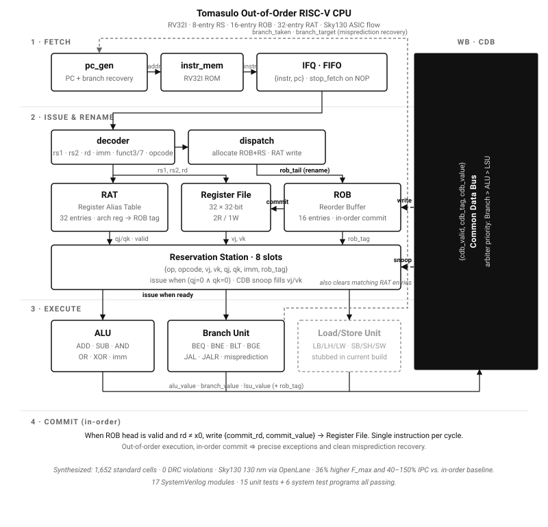

Artifact 2 — Tomasulo Out-of-Order RISC-V CPU
A synthesizable RV32I CPU implementing Tomasulo’s algorithm with register renaming, an 8-entry reservation station, and a 16-entry reorder buffer — taken from RTL through full ASIC place-and-route to a Sky130 GDSII.
- SystemVerilog
- Yosys
- OpenLane
- Sky130 PDK
- Icarus Verilog
- Verible
- KLayout
- Docker
Companion repos: in-order 5-stage baseline · IPC comparison & report
Architecture

ALU > LSU; it broadcasts results back to the ROB (write), the RS (snoop fills vj/vk), and clears matching RAT entries. A misprediction loop returns the corrected PC from the branch unit to pc_gen. Stage 4 commit: ROB head writes commit_rd and commit_value to the Register File when valid.">rtl/top.sv: fetch, issue/rename, execute, write-back via the Common Data Bus, and in-order commit. Dashed arrows are CDB broadcast and misprediction recovery.Highlights
- Full out-of-order pipeline: Fetch → Decode → Dispatch → Issue → Execute → Complete → Commit, across 17 SystemVerilog modules.
- Register Alias Table for renaming, reservation stations with Common Data Bus snooping, and a reorder buffer for in-order commit and precise exceptions.
- Speculative execution with branch-misprediction recovery; supports the full RV32I integer, load/store, branch, and jump ISA.
- 15 module-level unit tests plus six system test programs (arithmetic, logic, shifts, memory ops, branches, jumps) all passing.
- 36% higher operating frequency (69.7 MHz vs. 51.2 MHz) and 40–150% IPC improvement over a deliberately-built in-order 5-stage baseline.
- Synthesized to 1,652 standard cells with zero DRC violations on Sky130 130 nm; final GDSII produced through the OpenLane flow.
Context & reflection
This was the central project of my graduate-level digital-design coursework. Rather than stop at simulation, I committed to taking the design through the full ASIC flow: SystemVerilog RTL, unit and system verification, Yosys synthesis, OpenLane place-and-route, and Sky130 GDSII signoff in KLayout. I deliberately built an in-order 5-stage RISC-V CPU first so I would have a fair, head-to-head IPC and frequency baseline to compare the Tomasulo machine against. The companion analysis repository contains the benchmarking script, the IPC tables, and a LaTeX-generated report that turns those measurements into a written argument for when out-of-order execution is worth its complexity.
This artifact is the closest thing I have to a complete portrait of the engineer I want to be. It shows that I can hold a complex system in my head — register renaming, CDB arbitration, speculative recovery, precise commit — while also paying the small, unglamorous taxes that real hardware design requires: synchronous reset throughout, a unit test for every module, a linter in CI, and timing closure before declaring the design done. It also reflects how I prefer to work: build the simpler thing first (the in-order pipeline), then justify the added complexity of the out-of-order machine with measured numbers rather than intuition. Doing place-and-route through OpenLane and inspecting the final GDSII in KLayout was the moment the abstractions of my coursework became something physical, and it cemented my decision to pursue VLSI and computer architecture professionally.